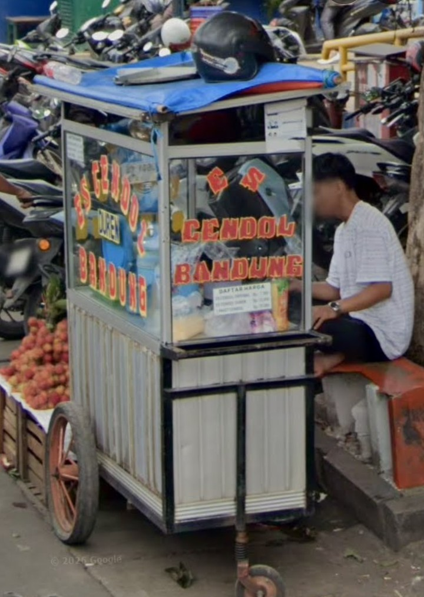
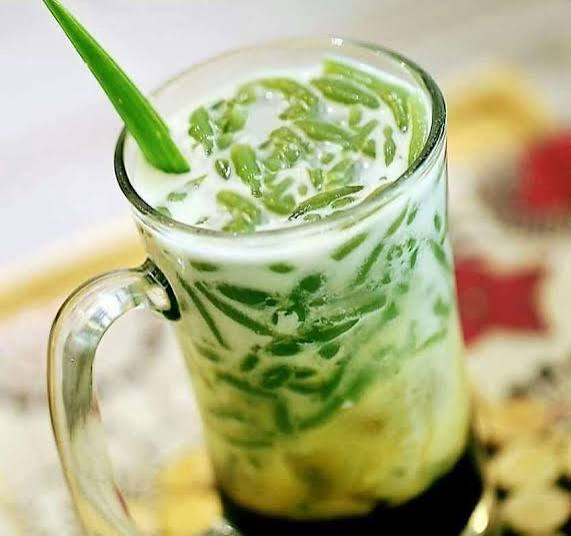
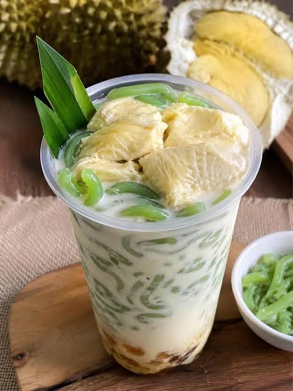

Cendol hijau lembut, santan kental, gula merah pilihan. Tersedia rasa Biasa & Durian. Segar setiap hari di Jakarta Timur.
Sejarah usaha Cendol Bandung

Usaha Es Cendol milik Pak Ramadhan telah berdiri sejak belasan tahun yang lalu. Usaha ini berawal dari keinginan Pak Ramadhan untuk memenuhi kebutuhan ekonomi keluarga dengan berjualan minuman tradisional. Hingga saat ini, usaha tersebut terus bertahan dengan menjaga kualitas dan cita rasa, sekaligus ikut mempertahankan keberadaan minuman tradisional Indonesia.
Kualitas yang kami jaga setiap hari
Cendol dari tepung beras & daun suji asli, tanpa pewarna berbahaya.
Santan perasan sendiri yang kental dan gurih, bukan dari kaleng.
Gula merah murni yang manis legit, bukan gula pasir biasa.
Dibuat setiap hari, dingin dan segar sampai ke tangan pembeli.
Pilih rasa favoritmu

Cendol hijau lembut + santan kental + gula merah + es batu. Rasa klasik yang segar dan bikin ketagihan.

Cendol klasik + tambahan daging durian asli. Manis, creamy, dan harum khas durian yang bikin nagih.
Apa kata mereka yang sudah coba
"es cendolnya seger, wajib beli ini setelah keliling dari pasar. lokasinya tepat di depan pasar ciplak. harganya murah 10k per porsi."
"Bisa buat pesanan pesta pernikahan atau sunatan"
"Rekomended es cendolnya mantul"
Pilih cara yang paling nyaman
Datang ke lokasi di Jakarta Timur. Lebih hemat dan langsung nikmati.
Chat untuk pre-order atau delivery area sekitar. Sebutkan rasa (Biasa / Durian).
Langsung chat kami via WhatsApp
Jakarta Timur — buka di Google Maps
📍 Jakarta Timur
Datang langsung ke lokasi jualan. Klik tombol untuk buka rute di Google Maps.
📍 Buka di Google MapsJam Buka: Setiap hari 08.00 – 15.00 WIB
WhatsApp: +62 815-7453-8894
Yang sering ditanyakan
Ada 2 rasa: Cendol Biasa (Rp 7.000) dan Cendol Durian (Rp 12.000).
Ya, bisa delivery via WhatsApp untuk area sekitar Jakarta Timur. Chat kami untuk cek ongkir.
Kami buka setiap hari mulai pukul 08.00 – 15.00 WIB.
Bisa. Selain tunai, kami menerima pembayaran via transfer atau QRIS. Konfirmasi saat pesan via WhatsApp.
Siap melayani setiap hari
Setiap hari
08.00 – 15.00 WIB